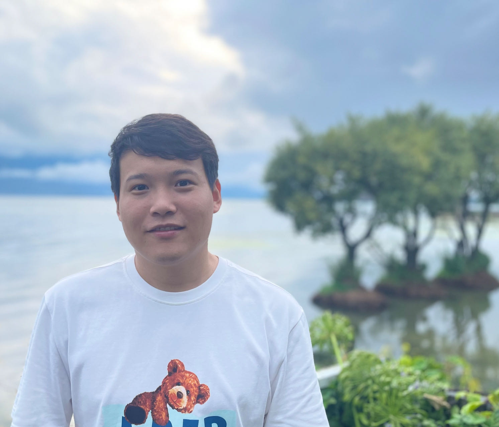
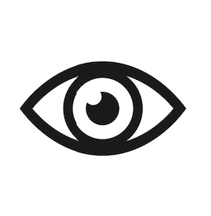
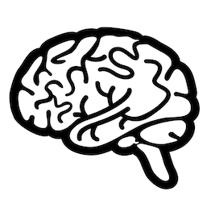
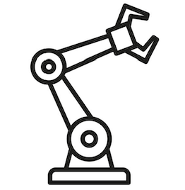

Jindong Gu
Senior Research Fellow, University of Oxford
Faculty Researcher, Google Research

I am a Senior Research Fellow at University of Oxford, a member of
My research goal is to build Responsible AI. Specifically, I am interested in the interpretability, robustness, privacy, and safety of
-  Visual Perception,
-  Foundation Model-based Understanding and Reasoning,
-  Robotic Policy and Planning,
- and their Fusion towards General Intelligence Systems.
[Hiring!] If you like to work together with me as a Ph.D. student, visiting student/intern in the area of Responsible AI.
Please drop me an email (jindong DOT gu AT outlook DOT com).
News
- 02 / 2024: Three papers on AI safety are accepted in CVPR2024.
- 01 / 2024: One Journal paper on Efficient Adversarial Training is accepted to TIFS.
- 01 / 2024: Three papers on AI safety (two Spotlight) are accepted in ICLR2024.
- 01 / 2024: One Journal paper on AI safety is accepted to TIFS.
- 12 / 2023: Three papers on AI safety and robustness are accepted in AAAI2024.
- 11 / 2023: I started a part-time Faculty Scientist position in Responsible ML team of Google Research.
- 10 / 2023: I was promoted to Senior Research Fellow at University of Oxford.
- 09 / 2023: One paper is accepted to BMVC 2023 and One Benchmark paper to NeurIPS 2023.
- 07 / 2023: Three papers on VLM Understanding and Robustness are accepted to ICCV 2023.
- 05 / 2023: Selected as CVPR 2023 Outstanding Reviewer.
- 05 / 2023: One paper has been accepted to ACL Findings 2023.
- 02 / 2023: One paper has been accepted to CVPR 2023.
- 11 / 2022: I join Torr Vision Group as Postdoctoral Researcher at University of Oxford.
- 08 / 2022: I join Google Responsible ML Team as a Research Intern.
- 07 / 2022: Four papers on Robustness of Vision Systems are accepted to ECCV 2022.
- 04 / 2021: I join Microsoft Research Asia as a Research Intern.
- 03 / 2021: One paper has been accepted as oral to CVPR 2021.
- 01 / 2021: One paper has been accepted to ICLR 2021.
Experience
- 11 / 2023 - present: Faculty Scientist at Google, New York, USA
- 11 / 2022 - present: Postdoctoral Researcher at University of Oxford, Oxford, UK
- 08 / 2022 - 11 / 2022: Research Intern at Google, New York, USA
- 04 / 2021 - 02 / 2022: Research Intern at Microsoft Research Asia, Beijing, China
- 08 / 2020 - 03 / 2021: Research Intern at Tencent AI Lab, Shenzhen, China
- 09 / 2017 - 08 / 2020: Doctoral Researcher at Siemens Technology, Munich, Germany
Selected Publications
-
-
Self-Discovering Interpretable Diffusion Latent Directions for Responsible Text-to-Image Generation [PDF]IEEE Conference on Computer Vision and Pattern Recognition (CVPR) , 2024
-
Under Review, 2023
-
An Image Is Worth 1000 Lies: Transferability of Adversarial Images across Prompts on Vision-Language Models [PDF][CODE]International Conference on Learning Representations (ICLR) , 2024
-
European Conference on Computer Vision (ECCV) , 2022
-
SegPGD: An Effective and Efficient Adversarial Attack for Evaluating and Boosting Segmentation Robustness [PDF]European Conference on Computer Vision (ECCV) , 2022
-